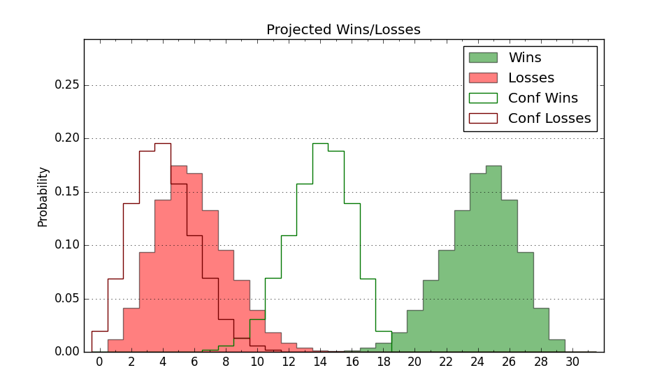

| Home | Game Probabilities | Conferences | Preseason Predictions | Odds Charts | NCAA Tournament |
| City: | Charleston, South Carolina | |
| Conference: | Colonial (1st)
| |
| Record: | 0-0 (Conf) 7-1 (Overall) | |
| Ratings: | Comp.: 8.3 (88th) Net: 13.0 (65th) Off: 112.8 (26th) Def: 99.9 (162nd) SoR: 81.1 (19th) |
| Remaining | ||||||
|---|---|---|---|---|---|---|
| Date | Opponent | Win Prob | Pred. | |||
| 12/3 | @ The Citadel (277) | 75.1% | W 82-74 | |||
| 12/6 | @ Presbyterian (328) | 84.8% | W 77-65 | |||
| 12/14 | Stetson (225) | 87.3% | W 84-71 | |||
| 12/19 | @ Coastal Carolina (280) | 75.4% | W 78-70 | |||
| 12/29 | Hampton (347) | 96.5% | W 91-66 | |||
| 12/31 | @ Towson (107) | 41.4% | L 72-74 | |||
| 1/4 | @ North Carolina A&T (295) | 77.8% | W 82-73 | |||
| 1/7 | Delaware (219) | 86.5% | W 85-71 | |||
| 1/11 | @ UNC Wilmington (164) | 55.6% | W 74-73 | |||
| 1/14 | Elon (320) | 94.1% | W 87-67 | |||
| 1/16 | William & Mary (281) | 91.4% | W 84-67 | |||
| 1/19 | @ Monmouth (342) | 88.1% | W 84-69 | |||
| 1/21 | @ Northeastern (301) | 78.9% | W 80-70 | |||
| 1/28 | Hofstra (113) | 71.5% | W 84-77 | |||
| 2/2 | @ Drexel (151) | 52.3% | W 73-72 | |||
| 2/4 | @ Delaware (219) | 65.4% | W 80-76 | |||
| 2/8 | UNC Wilmington (164) | 81.0% | W 79-68 | |||
| 2/11 | @ Hampton (347) | 88.9% | W 86-70 | |||
| 2/13 | Northeastern (301) | 92.7% | W 85-66 | |||
| 2/16 | @ Elon (320) | 82.3% | W 82-71 | |||
| 2/23 | Towson (107) | 70.6% | W 76-70 | |||
| 2/25 | Stony Brook (351) | 96.8% | W 88-64 | |||
| Previous | Game Score | |||||
| Date | Opponent | Win Prob | Result | Off | Def | Net |
| 11/7 | Chattanooga (124) | 74.5% | W 85-78 | 1.2 | -2.0 | -0.8 |
| 11/11 | @North Carolina (14) | 10.1% | L 86-102 | 12.3 | -16.4 | -4.1 |
| 11/14 | Richmond (122) | 74.2% | W 92-90 | 2.7 | -9.3 | -6.6 |
| 11/17 | Davidson (152) | 79.1% | W 89-66 | 12.4 | 8.9 | 21.3 |
| 11/18 | Colorado St. (58) | 54.7% | W 74-64 | -0.4 | 16.5 | 16.1 |
| 11/20 | Virginia Tech (47) | 49.5% | W 77-75 | -2.1 | 9.0 | 6.9 |
| 11/23 | Kent St. (49) | 49.8% | W 74-72 | 1.7 | -2.7 | -1.0 |
| 11/29 | Old Dominion (178) | 82.4% | W 75-60 | -2.0 | 3.3 | 1.3 |
| Stats & Trends | |||||
|---|---|---|---|---|---|
| Current | Day | Week | Month | Season | |
| Composite | 8.3 | -0.1 | +0.6 | +8.2 | +8.2 |
| Comp Rank | 88 | -1 | -1 | +71 | +71 |
| Net Efficiency | 13.0 | -0.2 | -0.4 | -- | -- |
| Net Rank | 65 | -2 | +7 | -- | -- |
| Off Efficiency | 112.8 | -0.4 | -1.4 | -- | -- |
| Off Rank | 26 | +1 | +1 | -- | -- |
| Def Efficiency | 99.9 | +0.2 | +1.0 | -- | -- |
| Def Rank | 162 | +5 | +17 | -- | -- |
| SoS Rank | 84 | +2 | -10 | -- | -- |
| Exp. Wins | 24.1 | +0.1 | +0.7 | +8.1 | +8.1 |
| Exp. Conf Wins | 13.9 | +0.0 | +0.4 | +3.2 | +3.2 |
| Conf Champ Prob | 44.2 | +0.3 | +4.4 | +30.1 | +30.1 |

| Advanced Stats | ||
|---|---|---|
| Stat | Value | Rank |
| Off Eff FG % | 0.568 | 24 |
| Off Ast Ratio | 0.134 | 222 |
| Off ORB% | 0.367 | 18 |
| Off TO Rate | 0.168 | 208 |
| Off FT Ratio | 0.345 | 128 |
| Def Eff FG % | 0.506 | 196 |
| Def Ast Ratio | 0.124 | 76 |
| Def ORB% | 0.268 | 179 |
| Def TO Rate | 0.196 | 44 |
| Def FT Ratio | 0.249 | 71 |